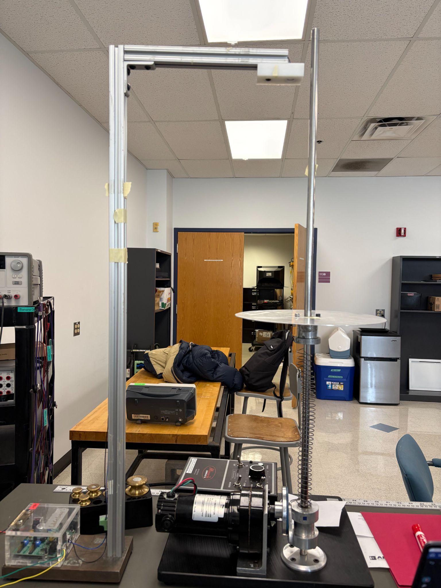
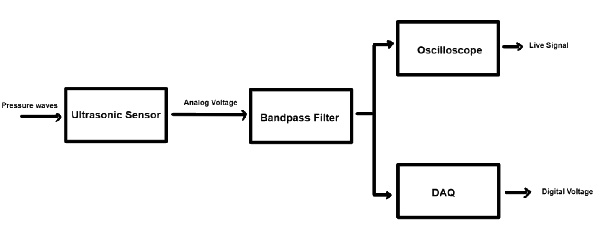
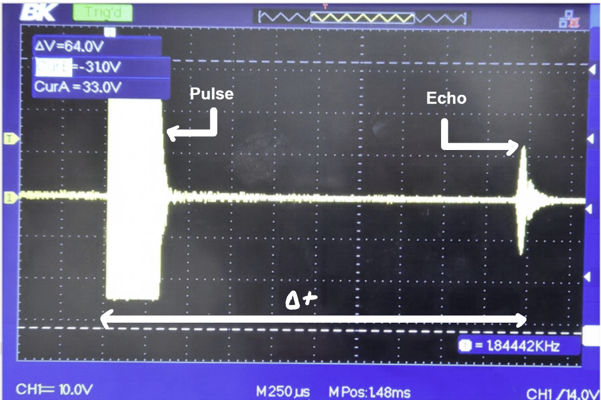
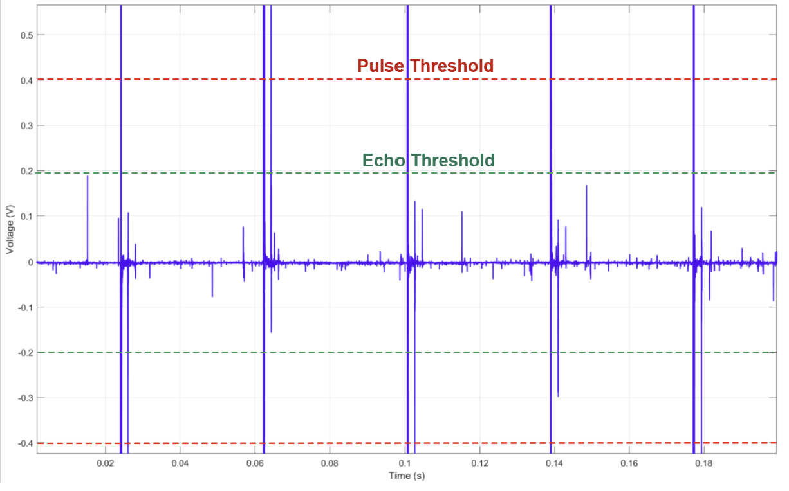
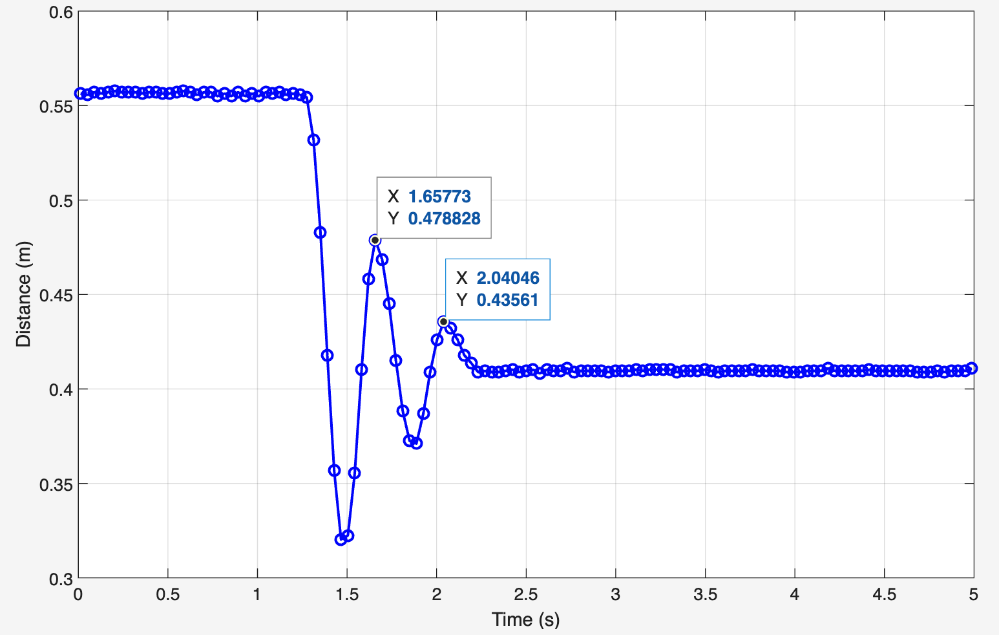
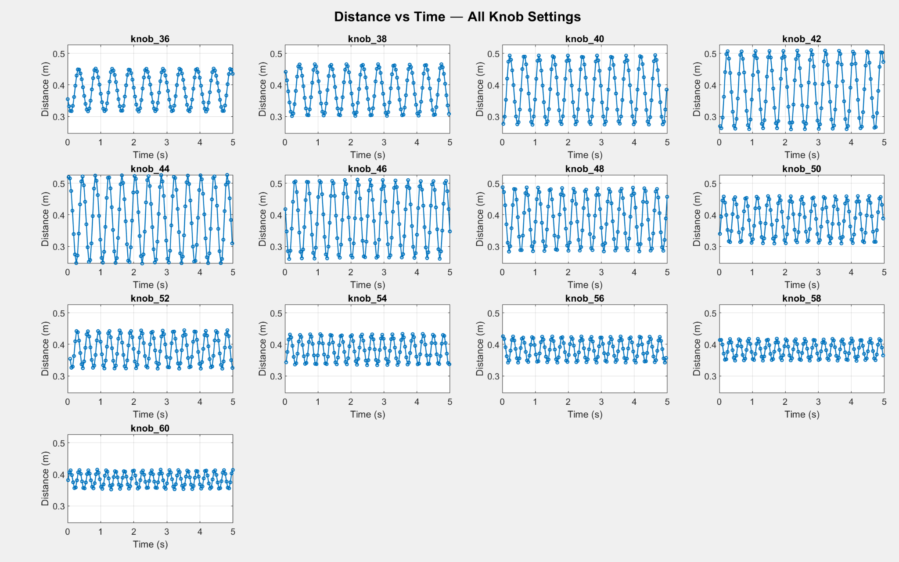
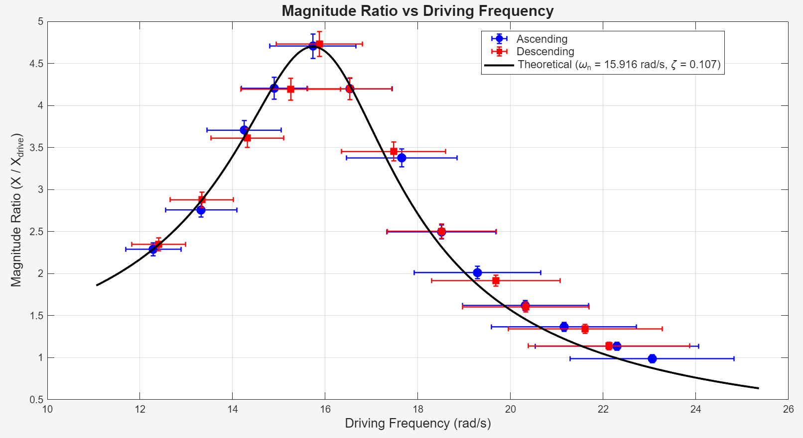
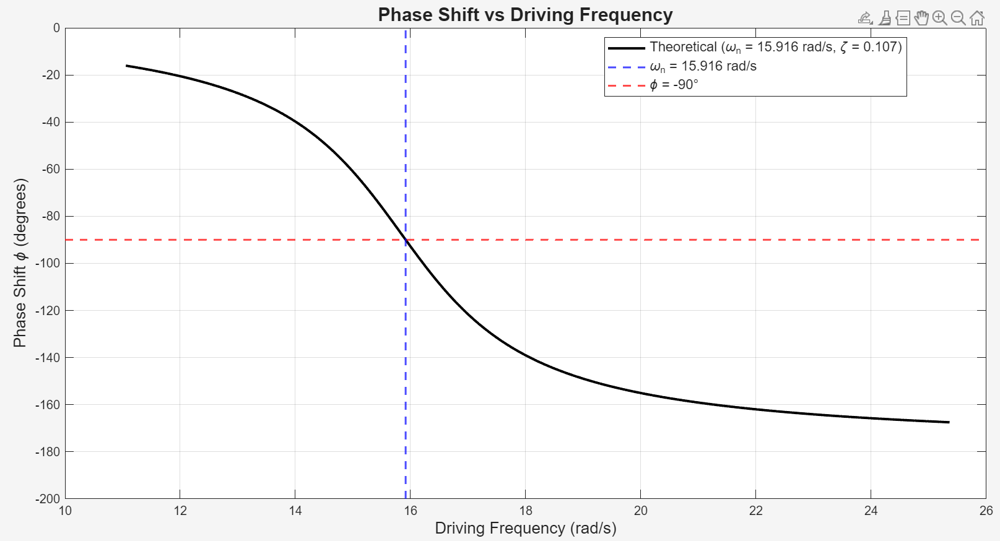
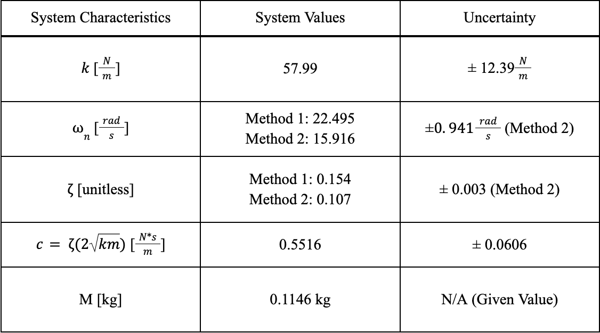

Spring 2026
Ultrasonic Sensor
Demo
See it in action
Objective
Measuring an oscillating mass without touching it
ME310 is BU's instrumentation course, and the final project dropped four of us into Group 2 with one job: track the motion of a vibrating mass using nothing but sound. The rig is a spring-mass-damper oscillator. A collar and plate weighing 114.6 g sit on top of a spring, a motor shakes the base through an adjustable knob, and an ultrasonic sensor looks straight down at the collar from an aluminum frame above it. We had to pull the system's natural frequency and damping ratio out of the data using two independent methods each, then sweep the motor across frequencies below and above resonance to map the full frequency response and check it against second order theory.

Sensor choice
Why we measured with sound
The sensor is an AirMar AT-200 running near 200 kHz. We picked ultrasonic ranging over the other options in the lab for three reasons. It never touches the mass, so it adds no force, no friction, and no extra damping to the thing we are trying to measure. The linear potentiometer would have dragged an extensible wire on the collar and changed the answer. It reads displacement straight away, so there is no double integration like an accelerometer needs and no drift building up from that math. And it needs no calibration. The distance comes from the speed of sound and a measured time, not from a voltage curve we would have to build for every setup.

Signal processing
From pulse and echo to a distance
The sensor works on time of flight. It fires a short ultrasonic burst, the burst bounces off the collar, and the sensor listens for the return. The distance is just d = cΔt / 2, where c is the speed of sound near 343 m/s at room temperature and Δt is the round trip time. On the oscilloscope you see both events clearly, the tall transmit pulse and the smaller echo a fixed time later, and moving the collar by hand slides the echo along the screen.
To get clean signals we ran the sensor output through a Krohn-Hite bandpass filter set to pass 190 to 210 kHz, then split it with a T connector to the oscilloscope and a National Instruments DAQ sampling at 50 kHz. We modified the provided MATLAB script so it set a pulse threshold and an echo threshold, found those two spikes in every cycle, measured the gap, and turned it into a collar position. Run the motor and that position traces out a clean sine wave.


Left: transmit pulse and echo on the scope, with Δt between them. Right: raw DAQ voltage, where the script keeps only the spikes that clear the thresholds and ignores the noise in between.
Parameters
Pinning down k, and two answers for the natural frequency
Before any of the dynamic work we needed the spring constant. We loaded the upper collar with known masses from 200 g to 1500 g, measured how far the spring compressed at each step, and took k = F / Δx. The average came out to 57.99 N/m, but k crept up from about 41 N/m at light load to 76 N/m at the heaviest, so the spring stiffens as you push on it. That weak nonlinearity comes back to bite us later.
For the natural frequency we used two methods. Method 1 is the textbook one, ωn = √(k/m) with the static k, which gave 22.5 rad/s or 3.58 Hz. Method 2 works backward from the sweep: find the driving frequency that produced the biggest oscillation, which was knob setting 44, then combine that resonance frequency with the damping ratio to get 15.9 rad/s or 2.53 Hz. The two disagree by 29 percent, and Method 2 is the one we trusted. The static k is inflated by that stiffening at high load, while the collar during the sweep barely compresses the spring compared to a 1500 g weight, so the effective stiffness in motion is lower. A third check off the free decay landed at 16.5 rad/s, within about a percent of Method 2.
Damping
Two reads on the damping
Damping got the same treatment. Method 1 is logarithmic decrement. We pushed the collar down by hand with the motor off, let it ring out, and used two consecutive peaks and the resting position from the decay curve to get ζ = 0.154. Method 2 is the peak magnitude method. At resonance the height of the amplitude peak alone fixes the damping, and that gave ζ = 0.107 with far less uncertainty, so that is the value we carried forward. It also makes physical sense that it reads lower. During a fast steady state resonance the dry friction in the collar bearings matters less than it does during a slow hand released decay.

Frequency sweep
Sweeping through resonance
With the parameters in hand we ran the motor across 13 knob settings from 36 to 60, roughly 2 to 3.7 Hz, recording the collar motion at each one. We did the sweep twice, once stepping the frequency up and once stepping it down, to check whether the system behaved the same both ways. The amplitude grows as the driving frequency climbs toward the natural frequency, peaks hard at knob 44, then falls off again as the mass can no longer keep up with the faster shaking. Classic resonance.

Results
Matching the second order model
The payoff is the frequency response. We plotted the magnitude ratio, the collar's motion divided by the base motion, against driving frequency for both sweeps and laid the theoretical second order curve on top using ωn = 15.9 rad/s and ζ = 0.107. The data sits right on the curve. The resonance amplitude came out to 0.2745 m going up and 0.2759 m coming down, a difference under 0.6 percent and well inside our error bars. Away from resonance the up and down sweeps split by a hair, which points back to the weak spring nonlinearity and a bit of bearing friction, both of which you expect from a real rig.


Left: measured magnitude ratio for both sweep directions against theory. Right: the phase lag passes through 90 degrees right at the natural frequency.
The ultrasonic sensor held up as the only instrument in the loop. The things to watch are keeping the beam square to the collar, sampling well above the sensor's own 25 Hz pulse rate so nothing aliases, and remembering that the speed of sound drifts with room temperature.

Project Image